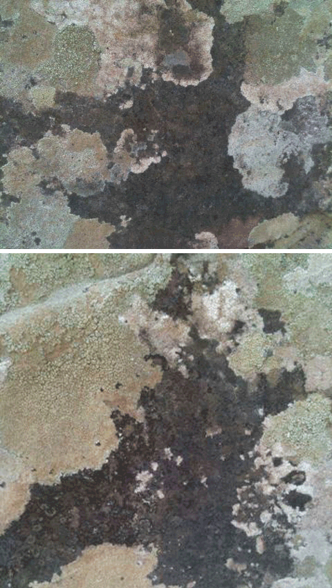

After seeing some rock art on a trip, the kids were able to see figures all over the rock.
Lichens make the strangest forms. Wolves, Giraffes ...
Después de ver en una excursion algunas pinturas rupestres, los niños pudieron ver figuras sobre todas las rocas.
Líquenes hacen formas muy extrañas. Jirafas, lobos ...
Nachdem wir auf einem Ausflug Felsbilder angeguckt haben, haben die Kinder Figuren auf allen Felsen ausmachen können. 
Flechten machen die eigenartigsten Formen. Wölfe, Giraffen...